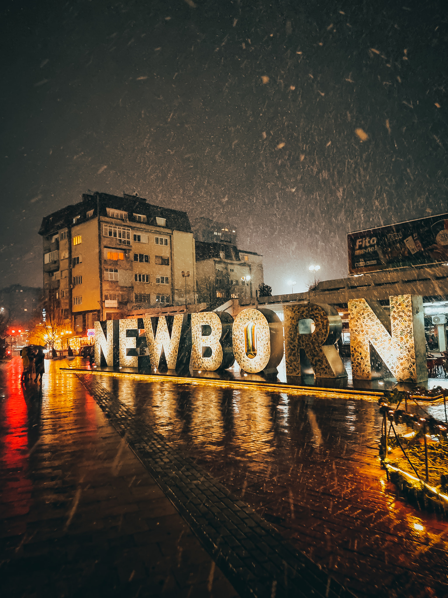
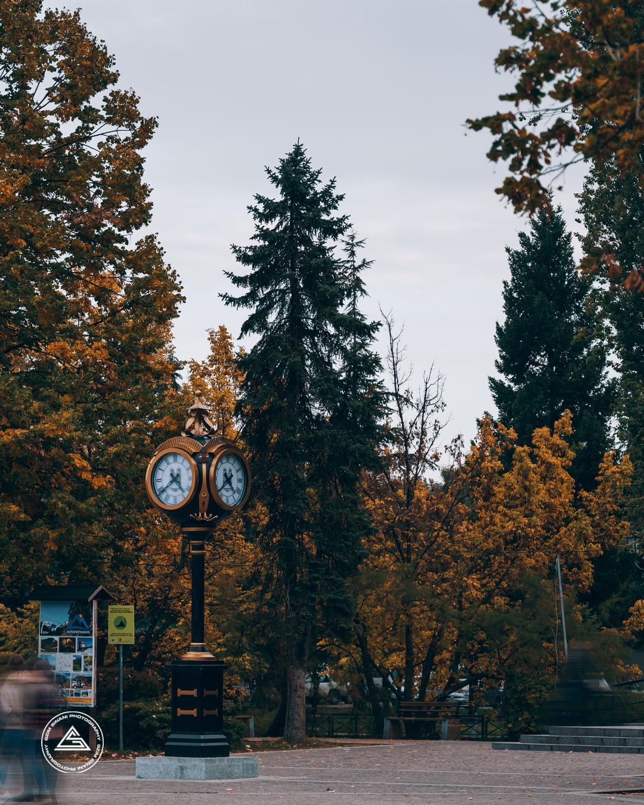
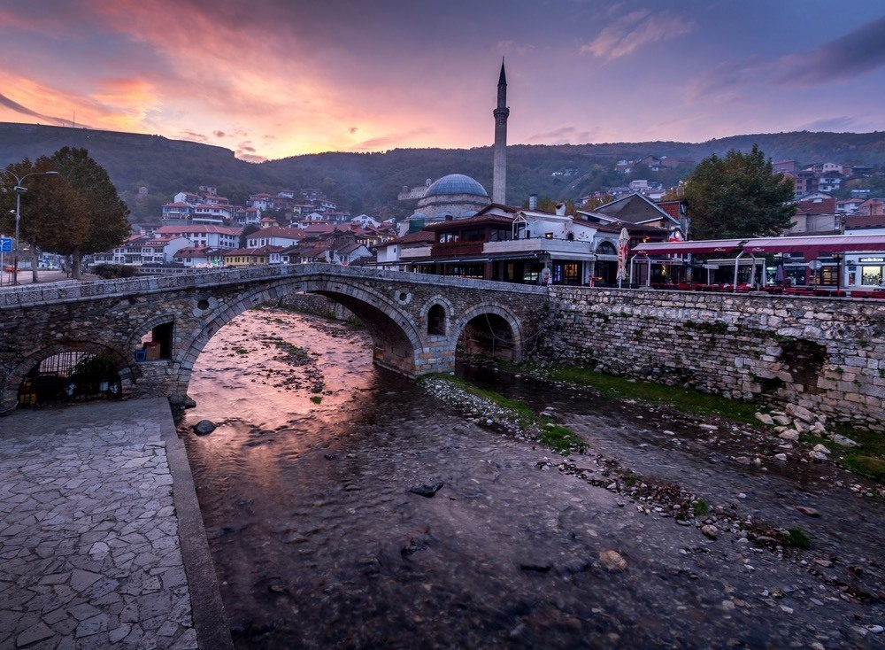
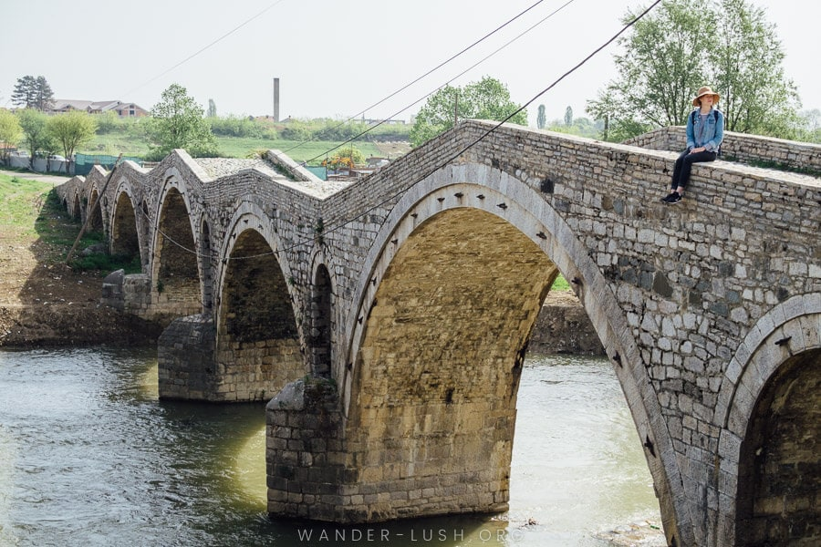
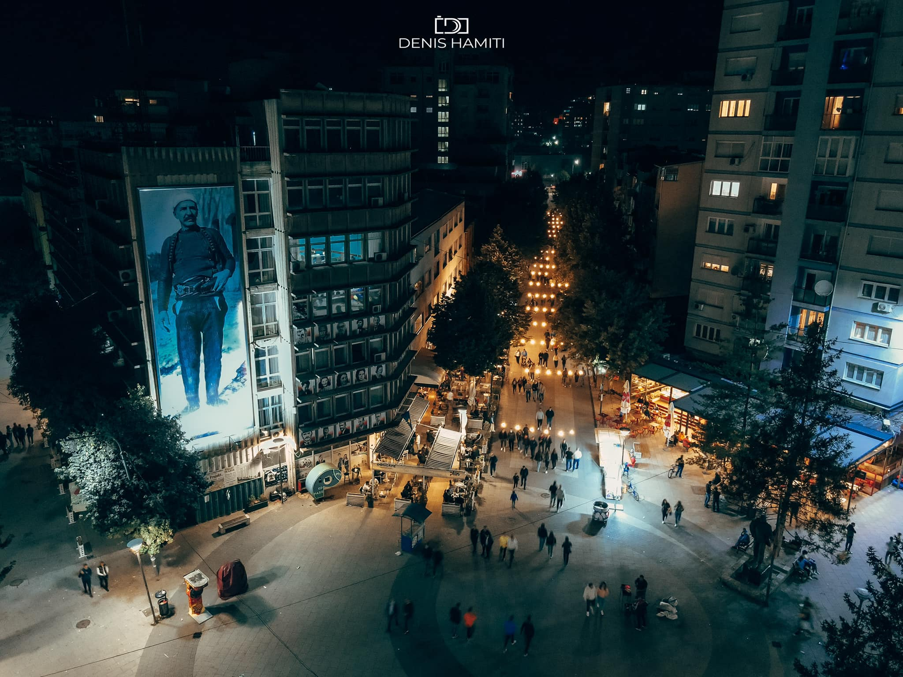
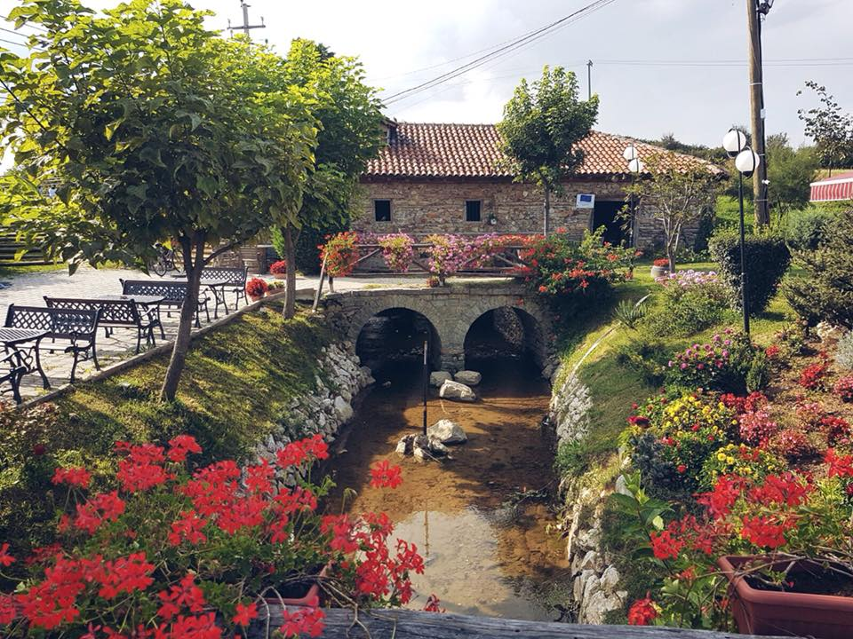

{kind=link}
{kind=link}
Kosovo, officially the Republic of Kosovo, is a partially recognised state in Southeast Europe.
It lies at the centre of the Balkans, occupying an area of 10,887 km2 (4,203 sq mi), with a population of about 1.8 million.Pristina Pristina is the capital city of Kosovo and its political and economic centre. It may not be as fascinating as other Eastern European capital cities, but Pristina is charming in many ways. Great café and food culture and the people are wonderful.
As a young and attractive country, Kosovo has a very rich culture and history. Kosovo Cultural Heritage was created by ancients Illyrians and Romans with later indications by different empires in more recent centuries. When traveling around Kosovo, there are many opportunities to experience the very old civilization, unique culture, and distinctive traditions which are documented in archeological parks, natural parks, galleries, religious monuments, and museums.
| CITIES |
Winter
|
||
|---|---|---|---|
|  |
PrishtinaPristina is the capital of Kosovo and seat of the eponymous municipality and district. It is the second-largest Albanian-inhabited city in Europe, after Tirana. Some absolute highlights in Pristina are the Museum of Kosovo, Emin Gjiku Ethnographic Museum, Sultan Mehmet Fatih Mosque, Germia Park, and the vibrant NEWBORN sculpture. Read more |
 |
PejePeja is the fourth largest city of Kosovo and seat of Peja Municipality and Peja District. The spectacular Rugova Canyon and Bjeshkët e Nemuna National Park, are only a few kilometers from the city center, making Peja an excellent destination for both culture and nature. Read more |
|  |
PrizrenWhile Pristina is the largest city in Kosovo, many people consider Prizren its capital of culture. Situated in the Sharr Mountains’ foothills and near the border of both Albania and Macedonia, Prizren is an ancient town chock-full with historical sites. Its Old Town is dotted with Byzantine and Ottoman architecture, has a restored 16th-century Old Stone Bridge, and is home to the UNESCO-listed Our Lady of Ljeviš Church Read more |
 |
GjakovaIt’s home to the longest bazaar in the Balkans.Known as the Old or Grand Bazaar, it stretches for a full kilometer and is lined with around 500 shops. There’s also a mosque, a clocktower, and several türbes (a type of Turkish tomb). The 16th-century Hadum Mosque lies nearby as well. Other Kosovo attractions include the towering Saint Paul and Saint Peter Church and the Ethnographic Museum of Gjakova. Read more |
|  |
MitrovicaMitrovica is a city and municipality located in Kosovo. Settled on the banks of Ibar and Sitnica rivers, the city is the administrative center of the District of Mitrovica. The strategic position of the region of Mitrovica in the middle of two great rivers Ibar and Sitnica and its mineral wealth in Albanik (Monte Argentarum), made this location populated since prehistoric period. Read more |
 |
FerizajFerizaj is the third largest city of Kosovo and seat of Ferizaj Municipality and Ferizaj District. Ferizaj has been populated since the prehistoric era by the Starčevo, Vinča and Baden culture. During the Ottoman period, Ferizaj served as a trading center on the route between Belgrade and Thessaloniki. Read more |
{kind=link}
{kind=link}
{kind=link}
{kind=link}
{kind=link}
{kind=link}
| Lorem, ipsum. | Categories |
|---|---|
| Kategoria1 Kategoria1 Kategoria1 Kategoria1 Kategoria1 Kategoria1 Kategoria1 Kategoria1 Kategoria1 |
|
Link headerKategoria1Kategoria1 Kategoria1 Kategoria1 Kategoria1 Kategoria1 Kategoria1 Kategoria1 Kategoria1 |
|
Link headerKategoria1Kategoria1 Kategoria1 Kategoria1 Kategoria1 Kategoria1 |